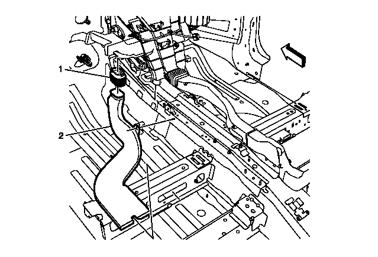
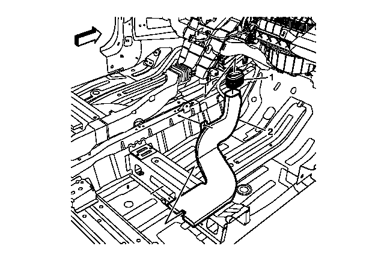
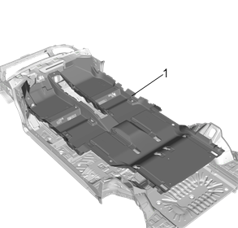

地板地毯的更换（六座）
拆卸程序
1.
前排座椅»拆卸—
前排座椅的拆卸和安装－凹背
2.
后排座椅»拆卸—
后排座椅的拆卸和安装（五座）
3.
第三排座椅»拆卸—
第三排座椅的拆卸和安装
4.
前侧门门槛装饰条»拆卸—
前侧门门槛装饰条的更换
5.
后侧门门槛装饰条»拆卸—
后侧门门槛装饰条的更换
6.
中柱下装饰板»拆卸—
中柱下装饰板的更换
7.
前地板控制台»拆卸—
前地板控制台的更换
8.
仪表板横梁托架»拆卸—
仪表板横梁托架的更换
9.
驾驶员搁脚板»拆卸—
驾驶员搁脚板的更换
10.
空调蒸发器和鼓风机模块排水软管»拆卸—
空调蒸发器和鼓风机模块排水软管的更换

11.
地板后出风管适配器（1）@地板后出风管（左侧）»拆卸—
地板后出风管的更换－左侧

12.
地板后出风管适配器（1）@地板后出风管（右侧）»拆卸—
地板后出风管的更换－右侧

13.
地板地毯(1)»拆除
安装程序
1.
地板地毯（1）»安装
2.
地板后出风管适配器（1）@地板后出风管（右侧）»安装—
地板后出风管的更换－右侧
3.
地板后出风管适配器（1）@地板后出风管（左侧）»安装—
地板后出风管的更换－左侧
4.
空调蒸发器和鼓风机模块排水软管»安装—
空调蒸发器和鼓风机模块排水软管的更换
5.
驾驶员搁脚板»安装—
驾驶员搁脚板的更换
6.
仪表板横梁托架»安装—
仪表板横梁托架的更换
7.
前地板控制台»安装—
前地板控制台的更换
8.
中柱下装饰板»安装—
中柱下装饰板的更换
9.
后侧门门槛装饰条»安装—
后侧门门槛装饰条的更换
10.
前侧门门槛装饰条»安装—
前侧门门槛装饰条的更换
11.
第三排座椅»安装—
第三排座椅的拆卸和安装
12.
后排座椅»安装—
后排座椅的拆卸和安装（五座）
13.
前排座椅»安装—
前排座椅的拆卸和安装－凹背